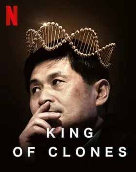

The genetics
Cloning and its ethics are the subject. The Hwang affair is one of the best-known cases of scientific fraud: his team claimed in Science, in 2004 and 2005, to have made human embryonic stem cells by somatic cell nuclear transfer, but investigators found fabricated data and ethical violations in the collection of egg cells, including eggs taken from his own junior researchers. Both papers were retracted and Hwang was later convicted of embezzlement and bioethical violations. The documentary presents him as a gifted but untrustworthy figure who still defends his ambitions, and it extends the story to commercial pet and camel cloning and to de-extinction. Reviewers praised its clear explanations, but several felt it was a surface-level portrait that did not take a firm stance on the moral questions it raised. Cloning of mammals by nuclear transfer is real; the specific human embryo results Hwang claimed were not.
The story
King of Clones is a Netflix documentary directed by Aditya Thayi about the South Korean scientist Hwang Woo-suk. With access to Hwang himself, it traces his rise to fame through the cloning of cows and pigs, his human cloning research with the fertility specialist Moon Shin-yong, and the 2004 announcement that they had cloned human embryos to derive stem cells, which made him a national hero in South Korea. It then follows his fall, when his published results proved fraudulent, and his later career cloning animals, including camels in the United Arab Emirates for wealthy clients. The film also explains the basics of cloning with simple animations and profiles people who want animals cloned, such as a radiologist who cloned his dead French bulldog, as well as projects to revive extinct species.